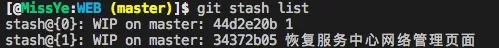

廖雪峰的教程https://www.liaoxuefeng.com/wiki/896043488029600/896827951938304
创建忽略文件
1 | .gitignore文件，文件中填写需要忽略文件的正则表达式 |
创建版本库
1 | git init |
提交到暂存区
1 | git add <file> |
提交到版本库
1 | git commit -m "提示信息" |
查看状态
1 | git status |
查看修改
1 | git diff <filename> |
查看日志文件
1 | git log //可以加参数 --pretty=oneline |
版本回退
1 | git reset --hard HEAD^ //回退到上个版本 HEAD指向当前版本 |
丢弃工作区的修改
1 | git checkout -- readme.txt //让这个文件回到最近一次git commit或git add时的状态。 |
撤销暂存区的修改
1 | git reset HEAD <file> |
删除文件
1 | git rm <file> |
远程仓库
1.创建ssh密钥
1 | ssh-keygen -t rsa -C "youremail@example.com" |
2.本地与远程关联
1 | git remote add origin git@github.com:michaelliao/learngit.git |
3.当前分支所有内容推送到远程
1 | git push -u origin master //-u参数：推送的同时将本地的master分支与远程的master分支关联 |
4.克隆
1 | git clone |
查看远程库的信息：
1 | $ git remote |
git remote -v显示更详细的信息
推送dev分支到远程
1 | git push origin dev |
分支
查看分支：git branch
创建分支：git branch <name>
切换分支：git checkout <name>
创建+切换分支：git checkout -b <name>
合并某分支到当前分支：git merge <name>
删除分支：git branch -d <name>
分支合并图：git log --graph
合并dev分支，请注意--no-ff参数，表示禁用Fast forward:git merge --no-ff -m "merge with no-ff" dev
BUG分支：
把当前工作现场“储藏”起来，等以后恢复现场后继续工作：
1 | git stash //储存 |
创建远程origin的dev分支到本地
1 | git checkout -b dev origin/dev |
删除远程分支：$ git push origin :heads/[name]
标签
git tag查看所有标签
git tag <name>就可以打一个新标签 默认标签是打在最新提交的commit上的
git tag v0.9 f52c633给指定commit打标签
git show <tagname>查看标签信息
创建带有说明的标签，用-a指定标签名，-m指定说明文字：
1 | git tag -a v0.1 -m "version 0.1 released" 1094adb |
删除标签
1 | git tag -d v0.1 |
上传空文件夹：
1 | find . -type d -empty -exec touch {}/.gitignore \; |
一、创建与合并分支
1、 从master分支创建dev分支并切换到dev分支
1 | git checkout master |
其中，git checkout -b dev 等价于:
1 | git branch dev |
（1）
1 | git branch |
查看本地当前的分支，分支前面带“*”表示当前分支，剩下的分支表示本地有的分支。
（2）
1 | git branch -a |
查看远程全部的分支，白色的表示本地有的，红色的表示本地没有，仅在远程存在。
2、修改代码、提交代码（当前的操作是在dev分支上进行）
1 | git add a.html |
3、分支合并(将dev合并到master)
1 | git checkout master |
4、合并完成后，删除dev分支.(删除dev分支时，注意我们当前所在的分支不能是dev分支)
1 | git branch -d dev |
5、删除后，查看分支(此时看不到dev分支了)
1 | git branch |
6、总结 ：工作中经常从master创建新的分支，具体操作如下:
1 | master创建新分支：git checkout master |
注意：将本地分支branch1推到远端的branch2操作步骤：
1 | git push origin branch1:branch2 |
7、删除分支：
1 | git branch -D issues1234 // 本地强制删除分支issues1234 |
二、解决冲突
1、发生冲突的文件
1 | <<<<<<< HEADCreating a new branch is quick & simple.=======Creating a new branch is quick AND simple.>>>>>>> feature1 |
其中，git使用 <<<<<<<，=======，>>>>>>>标记文件中自己和别人产生冲突的部分。
在 <<<<<<<，=======之间为自己的代码；=======，>>>>>>>之间为别人的代码。
如果保留自己的代码，将别人的代码删掉即可。
2、冲突解决后提交
1 | git status |
三、Bug分支
1、储藏更改:将当前更改的代码储藏起来，等以后恢复使用
1 | git stash |
2、恢复储藏的代码
1 | git stash pop // 恢复的同时把stash内容删掉 |
或者
1 | // 通过 git stash list，查看本地所有的stash,如果我要恢复第一个就执行： |
3、将stash空间清空
1 | git stash clear |
4、git stash pop 和 git stash apply 区别
1 | 原来git stash pop stash@{id}命令会在执行后将对应的stash id 从stash list里删除，而 git stash apply stash@{id} 命令则会继续保存stash id。 |
四、版本回退
1、回退至上一个版本
1 | git reset --hard HEAD |
2、回退至指定版本
1 | git reset --hard 版本号 |
3、查看以往版本号(本地的commit)
1 | git reflog |
4、查看各版本号及信息(所有的commit：本地commit + 其他同事的commit)
1 | git log |
五、撤销修改
1、撤销修改
1 | git checkout -- a.html |
分两种情况分析：
1 | ①： 还没有执行 git add 操作，执行上面的操作后，会恢复到和版本库中一模一样的版本状态。 |
注：一旦执行了git commit -m “*”，就不能再使用上面的命令回退。
2、撤销新建文件
比如新建一个aa.html页面，并未执行git add ,即没有被git追踪，此时如果你想撤销新建动作，可执行：
1 | git clean -f ../aa.html |
3、撤销新建文件夹
比如新建一个文件夹”demo”，并未执行git add ,即没有被git追踪，此时如果你想撤销新建动作，可执行：
1 | git clean -df ./demo |
六、对已push版本进行回退
1、第一步：
1 | git reset --hard 版本号 // 本地回退到指定的版本 |
2、第二步：
1 | git push -f origin dev //将远程的也回退到指定版本 |
七、本地同步远程删除的分支
1 | git fetch origin -p // 用来清除已经没有远程信息的分支，这样git branch -a 就不会拉取远程已经删除的分支了 |
八、删掉未与远程分支对应的本地分支
从gitlab上看不到的分支在本地可以通过git branch -a 查到，删掉没有与远程分支对应的本地分支：
1 | git fetch -p |
九、查看远程库与本地分支的信息
1 | git remote show origin |
十、标签管理
1、给当前分支最新commit打标签
1 | git tag v1.0.0 |
2、比如现在周五，要给周一某个commit打标签，应执行以下步骤：
（1）、查看log日志，找到相应的commit版本号
1 | git log --pretty=oneline --abbrev-commit |
（2）、给指定的commit打标签
1 | git tag v1.0.0 34372b05 |
（3）、创建的标签只存在本地，推至远程
1 | git push origin v1.0.0 |
（4）、一次性推送未推至远程的本地标签
1 | git push origin --tags |
（5）、查询所有标签
1 | git tag |
（6）、查询标签详细信息
1 | git show v1.0.0 |
（7）、删除本地标签
1 | git tag -d v1.0.0 |
（8）、删除远程标签
1 | // 先从本地删除git tag -d v1.0.0// 然后从远程删除 |
3、创建带有说明的标签，用-a指定标签名，-m指定说明文字
1 | // git tag -a 版本号 -m 说明信息 commit版本号 |